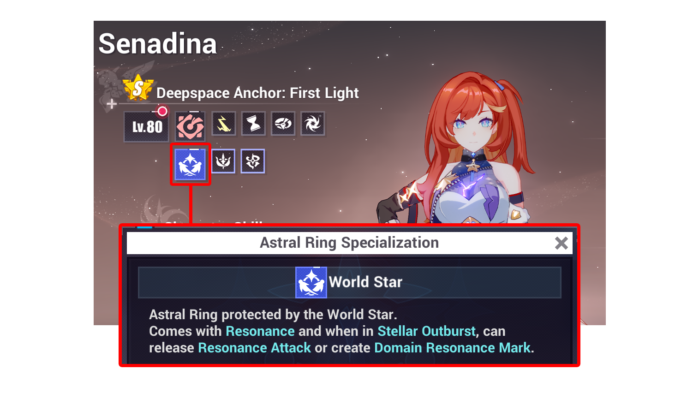
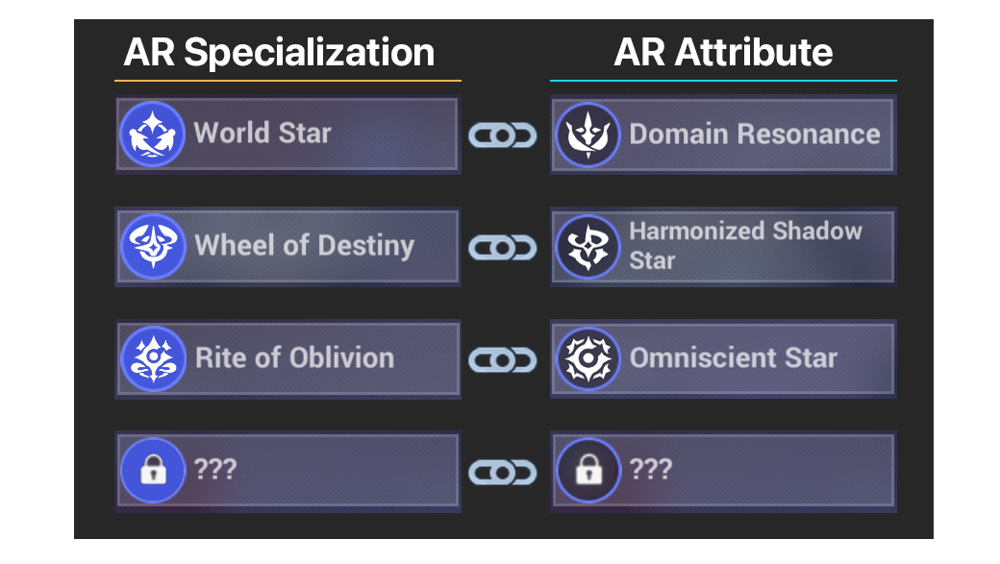
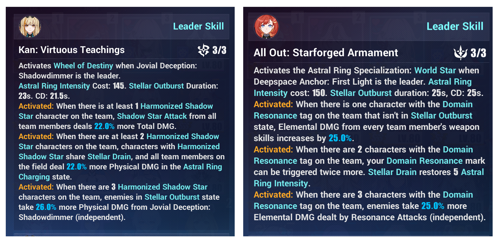
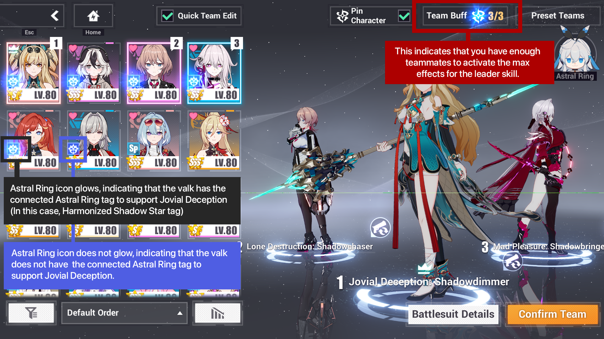
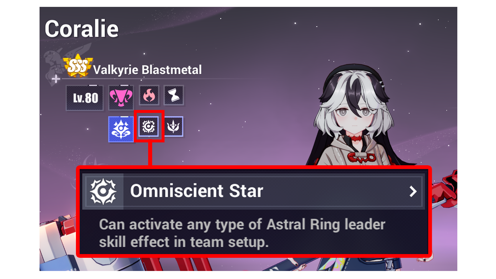

PART 2 TEAMBUILDING
1. AR SPECIALIZATION
Valkyries in Part 2 (released from v7.3 onwards) use a new system called
Astral Ring (AR).
- A valk can only have ONE AR Specialization.
- There are 12 AR specializations, but we only know 3 so far (World Star, Wheel of Destiny, Rite of Oblivion).

DPS and SUPPORT
- S-rank Part 2 valkyrie can be both a DPS and a SUPPORT.
- When a Part 2 valk becomes the leader, she becomes the DPS and activates her Astral Ring specialization.
- For example, if we set Senadina [Deepspace Anchor] as the leader, she becomes the DPS, and AR World Star is activated. So Sena will be called as World Star DPS (also called Resonance DPS).
2. PART 1 TEAMBUILDING
2. AR ATTRIBUTE
Every AR specialization has a connected AR attribute. A valkyrie can have multiple AR attributes.

So, what does AR Attribute do?
[FOR WORLD STAR and WHEEL OF DESTINY]
- AR attribute indicates that the valk can support another valk with the connected AR specialization.
- AR attribute also activates or allow certain buffs to reach max effect. Part 2 valkyrie skills, weapon, stigma and AstralOp effects require specific AR specialization and/or AR attribute to be activated, or to reach maximum effect.
- For example: Deepspace Anchor has Domain Resonance tag and Harmonized Shadow Star traits.
That means she can support World Star DPS and Wheel of Destiny DPS.
[FOR RITE OF OBLIVION]
1. As a support, Rite of Oblivion characters can support any Astral Ring team.
3. LEADER SKILL
One of the important skills that require specific AR attribute is the leader skill. If you take a look at the example below, Part 2 leader skills
are three times as long as Part 1 valk leader skills, and have strong buffs such as independent multiplier.

In the lineup menu, there are some indicators
that display the compatible teammates that can make the leader buff reach maximum effect.

Rite of Oblivion can activate any leader skill
Rite of Oblivion (RoO) has a connected AR attribute tag Omniscient Star -
which counts the valk for the leader skill's AR-specific requirement. Only leader skill okay~ This does not count towards other skills, weapon, and stigma effects that require AR-specific attribute.

So, what does AR Attribute do?
3. ASTRAL OP
When AR is activated, you can equip Astral Op.
Just like the valkyrie teambuilding, AstralOp buffs are also general but require AR-specific valkyries to activate the buffs.
Difference with ELF
In the context of S-rank AstralOp and ELF:
- Just like Part 2 weapon and stigma, AstralOp's buffs are more general, and require AR-specific valkyries to activate buff, or to reach max buffs.
- The biggest difference of AstralOp compared to Elf is that AstralOp gives AR meter regen, which allows you to activate Stellar Outburst much faster. This means there is a big difference in rotation with and without S-rank AstralOp.
- In Part 1 team, ELF only gives buffs and utility like switch cd reduction, but not sp regen. Even without an S-rank ELF, rotations are usually the same (in Abyss) with and without ELF.